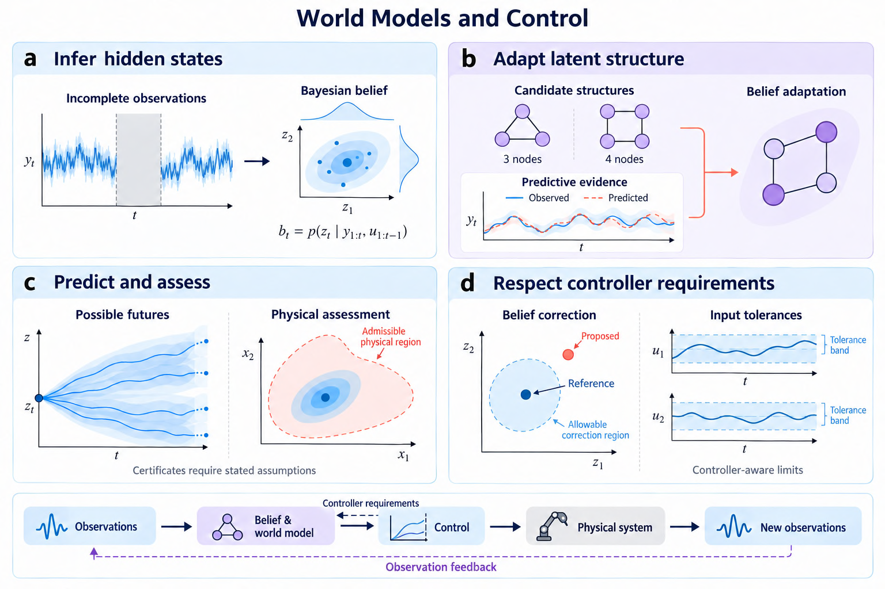

|
 Conceptual connections across related studies; guarantees depend on each study's assumptions. Seeing Beyond Vision: Stochastic World ModelsA world model describes how a system evolves and how observations arise. Under partial observability, a robot must reason about hidden states and possible futures, rather than rely only on the current image. Deep Stochastic State-Space Models (Deep SSSM) combine a probabilistic encoder, stochastic latent transitions, and variational inference. The aim is to carry uncertainty from perception into prediction, providing a foundation for planning under noise and occlusion. Seeing Beyond Vision: research overview | Deep SSSM: study details Research Threads and Selected Work1. Structural Belief AdaptationWhat if parameter tuning cannot repair the model mismatch? Cognitive Flexibility selects among latent structures using innovation-based predictive evidence, while preserving the Bayesian filtering recursion. The analysis separates well-posedness, the selection mechanism, and its consequences under the stated conditions. Study: Cognitive Flexibility as a Latent Structural Operator for Bayesian State Estimation 2. Robust Adaptation under Noisy EvidenceWhen does a score difference justify changing the model? Robust CF introduces switching margins that account for noisy innovation scores. A batch-split estimator uses existing particles to inform online margin calibration as the noise scale changes. The guarantees depend on the stated score-noise and effective-margin conditions. Study: Robust Cognitive-Flexible Filtering under Noisy Innovation Scores 3. Reliable Latent PredictionCan a learned belief remain useful when perception disappears? Deep SSSM studies stochastic latent dynamics and uncertainty propagation for occlusion-robust robotic prediction. A variational framework connects representation learning and prediction, laying a modeling foundation for future predictive and Bayesian model predictive control. Study: Deep Stochastic State-Space Modeling for Occlusion-Robust Robotic Manipulation 4. Physical-Latent CertificationWhen can a decoded latent belief support a physical safety claim? SafeCF-SSM combines channel-wise decoder error and belief uncertainty in a realizability test. Predictive surprise regulates both adaptation and safety margins. Each constrained channel is certified under the stated assumptions or explicitly declared uncertifiable under the given codec. In the reported quadrotor rotor-failure simulation, attitude channels remain certifiable while altitude is declared uncertifiable. The contribution makes the physical-latent gap checkable; it does not assume that the gap disappears. Study: SafeCF-SSM: Certifying, Not Closing, the Physical-Latent Problem in Adaptive Latent-Space Control 5. Controller-Aware Belief CorrectionHow far may a neural observer move its belief before the MPC plan changes too much? Neural Belief MPC derives separate correction and same-context adaptation budgets from prescribed input tolerances within a known affine MPC cell. It examines why constraints on the current input can miss changes later in the predicted plan. These certificates bound belief and input changes under the stated assumptions. Plan consistency alone does not establish true-state accuracy, nonlinear safety, or recursive feasibility. 6. Model Switching and RecoveryHow should sample size, sample refreshes, and hysteresis be designed together? Hysteretic Selection separates changes in the evidence from changes caused by refreshing Monte Carlo samples. Recorded-score accounts relate switching and recovery to sample size, refresh rate, and margin. A key distinction is that fewer switches can coexist with persistent wrong decisions. Toward Compliant IntelligenceThe longer-term direction connects uncertainty-aware tactile perception, stochastic belief, structural adaptation, and adaptive decision making in compliant robotic systems: Feel -> Believe -> Adapt -> Decide -> Interact Co-Flex, a direction in preparation, asks when and how often a model structure may switch within a closed loop. Hysteretic Selection is a related switching study and remains a separate work. Physical embodiment builds on earlier compliant pneumatic-artificial-muscle control and connects to Tactile Intelligence. Integrating the full belief-to-interaction pipeline remains a research objective; the studies above address its individual components. Related work on compliant actuation | All publications The studies examine different interfaces between inference, modeling, and control. Improved predictive fit does not itself establish controller safety; latent feasibility requires physical error accounting; and plan consistency does not itself establish closed-loop safety. Please see each study for its assumptions, evidence, and limitations. Thanana Nuchkrua | Control & Robotics Research |